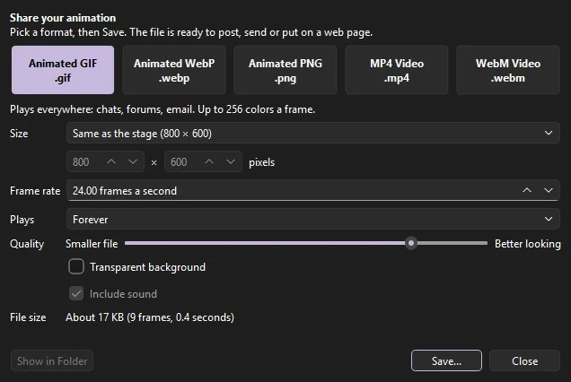

Output
Exporting and Publishing
Exports render through the same drawing code as the stage, so what you see is what you get. All export commands are under , makes a file ready to post online, and writes a set of formats at once.

- To post online
- Share: an animated GIF, WebP or PNG, or an MP4 or WebM video, sized for social sites.
- One picture
- Export Image (PNG, JPEG, GIF) or Export to SVG.
- Moving pictures
- Export Movie: video, animated GIF, PNG, SVG and EXR sequences, compositing passes, or the sound alone.
- For players and the web
- Export SWF Movie, and Publish for HTML5 pages, SWF and images together.
- For games
- Export Sprite Sheet.
- For the studio
- Export Shots, Render from Data (a movie for each row of a CSV file; see Templates), and Export FLA for Other Apps (a copy with Phoenix's own motion baked in; see Bake to keyframes).
Share
Choose to save your animation as a file you can post, send in a chat, or put on a web page. Pick a format, pick a size, and click Save....

| Format | Good for |
|---|---|
| Animated GIF | Plays everywhere: chats, forums, email. Up to 256 colors a frame, and see-through pixels are fully clear or fully solid. |
| Animated WebP | Like a GIF, but much smaller and in full color, with soft see-through edges. Plays in web browsers and many apps. |
| Animated PNG | Full color and soft see-through edges with nothing lost, for stickers and web pages. Bigger files. Saved with the .png ending, and plays in web browsers (other programs show its first frame). |
| MP4 Video | The video every social site takes, with sound. The smallest file for a long clip. |
| WebM Video | A web video that can have a see-through background, with sound. Plays in web browsers. |
- Size
- The stage's own size, half of it, a social site's size (Instagram, Instagram Story, TikTok, YouTube...), or Custom. When the site's shape is not your stage's shape, the whole stage still shows, with bars of the background color around it (clear bars with a transparent background).
- Frame rate
- Fewer frames a second make a smaller file. The animation still lasts as long: frames are skipped to keep time.
- Plays
- For GIF, WebP and animated PNG: forever, or a set number of times before it stops. Videos play once; sites loop them as they like.
- Quality
- Toward Smaller file or Better looking. For a GIF it sets how many colors a frame may use; for WebP, at the very top, every pixel is kept exactly. An animated PNG always keeps every pixel.
- Transparent background
- No stage color behind the art, for every format but MP4.
- Include sound
- For MP4 and WebM, the movie's sound.
- File size
- A guess at how big the file will be, worked out by saving a few frames. It updates as you change the settings, so you can aim for a site's size limit before you save.
Once the file is saved, the dialog says its name and size; Show in Folder opens the folder with the file selected, ready to drag into a browser or a chat. The dialog stays open, so you can save another format straight away. Share remembers the format, size and quality you used last.
Share uses the same drawing as Export Movie, through the scene's camera, over every frame of the current scene. WebP, MP4 and WebM are made with Phoenix's own copy of ffmpeg; if a copy of Phoenix can't make one of them, its button is grayed out. GIF and animated PNG are made by Phoenix itself.
Export Movie
Choose (Ctrl+Alt+Shift+S) to render a range of frames.

- Format
- What to make. See the table below.
- File
- Where to save it. Browse... picks a location.
- Size
- The output size in pixels. Keep proportions to match the stage's shape.
- Frames
- The first and last frame to export.
- Options
- Transparent background, Include sound, and Loop forever, where the format supports them. Include safe zones draws the safe zones and aspect-ratio frames over every frame, for a review copy. Through the camera renders the scene as its camera sees it; turn it off for the stage as drawn.
- Codec
- For video: H.264 (MP4) to watch and share; ProRes 422 HQ (MOV) for editing; ProRes 4444 with alpha (MOV), which keeps a transparent background, for compositing.
- Area
- Stage, or Everything: all the artwork on the frames, wherever it is, the pasteboard too. The size is then the stage's scale applied to that larger area.
- Colors
- For a GIF, how many colors each frame may use (2 to 256), and Dither to mix them so gradients stay smooth in few colors.
- Layers
- For a sequence per layer, which layers get one. All visible layers until you choose.
- Scenes
- In a document with more than one scene: This scene; All scenes, one after another into one file, the frame range being every frame of every scene; or Each scene to its own file, named after the file and the scene (
movie_Intro.mp4).
| Format | Produces |
|---|---|
| PNG Sequence | One numbered image per frame (name0001.png, name0002.png...), optionally with a transparent background. Ideal for compositing and editing software. |
| Video | With the H.264 codec, an MP4 (or a MOV if you name the file .mov) with the soundtrack mixed in as AAC audio: good quality, plays everywhere. With a ProRes codec, a MOV with the soundtrack as uncompressed PCM audio. |
| Animated GIF | A GIF, looping forever or playing once, with its own color palette for each frame. |
| PNG Sequence per Layer | A separate PNG sequence for every visible layer, with masks applied, for compositing layers separately. |
| Sound (WAV) | The mixed soundtrack on its own. |
| Compositing Passes (PNG), Multi-layer EXR | Line, color and matte passes for compositing. See Compositing passes. |
| SVG Sequence | One numbered SVG per frame, its shapes, strokes, gradients and text kept as vectors. Include hidden layers draws layers you have hidden; Link images writes each bitmap once as a file beside the SVGs (name_image_….png) rather than inside every frame. An adjustment layer works on pixels, so it and the layers under it go into each frame as one picture, at twice the size, with the layers above it as vectors. |
In every export, movie clips play their own animation, guide layers are left out, and locked layers are included. With on, movie clips follow the stop(), play() and goto calls in their frame scripts; see Frame scripts.
Every format plays at the document's frame rate; to change it, change the frame rate in the Doc tab of the Properties panel first. The file's extension follows the format you pick, and the dialog remembers the format, codec, GIF colors, area and image linking for next time. A progress bar shows while Phoenix renders; Cancel stops it, and a cancelled video is deleted rather than left half-written.
Video settings
Phoenix picks the encoder settings for each codec, so there is nothing to tune:
| Codec | Picture | Sound |
|---|---|---|
| H.264 | High quality (constant quality 18), 4:2:0 color, arranged to start playing before it has fully downloaded on the web. | AAC at 192 kbps. |
| ProRes 422 HQ | 10-bit 4:2:2 color. | Uncompressed 16-bit. |
| ProRes 4444 | 10-bit 4:4:4 color, with an alpha channel when Transparent background is checked. | Uncompressed 16-bit. |
These codecs need an even width and height, so an odd size loses its last row or column of pixels. Sound is 44.1 kHz stereo; frames with no sound make a video with no audio track. Export Movie makes H.264 MP4 or MOV and ProRes MOV; Share also makes WebM. For another format, convert the MP4 or a PNG sequence with a video tool. See also Video.
Animated GIFs
An animated GIF holds at most 256 colors at a time, so Phoenix chooses a palette for each frame on its own, from the colors that frame uses most, and the colors stay true through a long animation.
- Colors sets how many each frame may use, from 2 to 256. Fewer colors make a smaller file. Flat cartoon colors survive a small palette well; gradients, soft shadows and photographs need more.
- Dither spreads what each pixel misses of its true color onto its neighbors, so gradients look smooth instead of banded. Dithered frames make a larger file and can shimmer as they play; leave it off for flat art.
- Transparent background makes the empty parts of each frame clear. GIF has no partial transparency: a pixel more than half see-through becomes clear, and the rest are solid, so soft edges get a hard outline. Over a known background color, export with the stage color instead.
- Loop forever plays the GIF over and over; cleared, it plays once. To repeat it a set number of times, publish the GIF from Publish Settings.
GIF counts time in hundredths of a second, so Phoenix varies each frame's delay by a hundredth where needed to keep the whole animation in time with the frame rate.
Image sequences
Sequences number their files from 0001 after the name you give, with more digits for more than 9999 frames. PNG sequences keep full color and, with Transparent background, a clear background with soft edges intact. With Each scene to its own file, each scene's sequence is named after the scene.
About ffmpeg
Phoenix encodes and reads video with ffmpeg, which comes with Phoenix: it is installed beside Phoenix itself, so video export and video import work with nothing else installed. Phoenix always uses its own copy, never another ffmpeg on the machine, so a movie comes out the same everywhere. ffmpeg is a separate program under the GNU General Public License; its license, and where to get the source it was built from, are in the licenses/ffmpeg folder of the installation (on macOS, inside Phoenix.app).
Export Image
renders a single frame.

- File
- Where to save it. Typing a name ending in
.png,.jpgor.gifpicks that format, and picking a format changes the extension. - Format
- PNG, JPEG or GIF. Settings a format doesn't use are grayed out.
- Size
- Any size up to 16384 pixels a side, with the stage's proportions kept if you like. The whole stage is drawn at that size, so a larger size gives a sharper picture of the same area.
- Frame
- Which frame to render. It starts at the frame the playhead is on.
- Matte
- What shows where nothing is drawn: the stage color, transparent (not for JPEG), or any color you pick with the swatch beside it. A stage color that is partly see-through keeps its transparency in a PNG or GIF.
- Quality
- For JPEG, from 0 to 100. Higher looks better and makes a larger file. The default is 90.
- PNG
- Full color (24-bit, or 32-bit with transparency), or 8-bit: a palette of at most 256 colors, a smaller file for flat-colored art.
- Colors
- For an 8-bit PNG or a GIF: how many colors the palette has, from 2 to 256, and Dither to mix them so gradients stay smooth. Phoenix chooses the palette from the colors the picture uses most.
- Include safe zones
- Draws the safe zones and aspect-ratio frames over the picture, for a review copy.
Which to choose: PNG for art with sharp edges, flat color or transparency; JPEG for a picture like a photograph where a small file matters more than crisp edges; GIF or 8-bit PNG for a small file of flat-colored art. In a GIF, and an 8-bit PNG, a pixel is either clear or solid, so soft edges against transparency get a hard outline. Full-color PNG keeps soft edges.
Images are drawn smoothed (anti-aliased), like the stage. Export Image draws the whole stage; to export only part of it, set the size and crop the picture afterward, or use Everything in Export Movie for a PNG sequence of all the artwork, pasteboard included. Other image formats, such as WebP, TIFF or BMP, are not available.
Export to SVG
writes the current frame as an SVG file, which scales cleanly for print and the web. Hidden layers are left out and images are embedded. Masks are written as SVG clip paths, so masked art stays vector; a feathered mask is written as an SVG mask, its shape blurred, so the soft edge stays soft and the art stays vector too. Filters, which SVG cannot express the same way, are included as images, and blend modes draw as Normal.
Export to SVG asks only where to save, and writes the frame the playhead is on at the stage's size. For more control, there are two other ways to get SVG:
- SVG Sequence in Export Movie writes one SVG a frame, with Include hidden layers, Link images to write each bitmap once beside the files, a transparent background, and the Everything area for art on the pasteboard. Set the first and last frame to the same frame for a single SVG with these options.
- SVG image in Publish Settings writes the
#Staticframe, or the first, with Include hidden layers and Embed images (cleared, the images are written beside the SVG).
SWF movies
writes the document as an SWF movie, for players and pipelines that read SWF. The movie keeps its structure, so its scripts find what they work with: the scenes play one after another; movie clips are clips with timelines of their own that play on their own; buttons keep their up, over, down and hit frames, and the sounds on those frames; instances keep their names, color effects, filters and blend modes; mask layers clip what they mask, in buttons too; frame labels are kept; and dynamic text with a name or a variable, and input text, are text fields scripts can set and read. Shapes, strokes, gradients, static text, bitmaps and graphic symbols go in as vector shapes and images, written once and placed again wherever they show. A graphic symbol with movie clips, buttons or such text fields in it has its frames placed into the timeline it is on instead, frame by frame as it loops, plays once or holds a frame, so what is in it stays a clip its scripts and yours reach by name (a graphic with a mask in it is drawn as shapes). Motion tweens go in a frame at a time; shape tweens go in as morph shapes the player blends, their colors and gradients too, or a frame at a time where a tween's fills or lines are of a kind a morph shape cannot blend (bitmap fills, a radial gradient's focal point, dashed and other styled lines).
ActionScript 1 and 2 is compiled into the movie, so it runs in any player that plays SWF: frame scripts, on() handlers on buttons and movie clips, onClipEvent() handlers, #initclip, ActionScript 2 class files (found where Test Movie finds them) and the symbols linked to them, for attachMovie. A script that does not compile is left out and the export says why, with its scene or symbol, layer and frame.
ActionScript 3 is compiled into the movie too, as the bytecode players run, so the movie runs what Test Movie runs: the frame scripts of the main timeline (its scenes as one timeline) and of each movie clip, the document class, the classes symbols are linked to, and every class those use, found where Test Movie finds them (see Class files). Named instances are variables of the timeline they are on, unless the file's ActionScript settings turn off declaring stage instances; a symbol linked to a class with no file of its own gets a class made for it; a symbol with frame scripts linked to a class file of its own gets a class for its frames under that one. The fl.controls components the movie uses go in as Phoenix's own, with the parameters set in the Component Parameters, drawn with the skins in the library's Component Assets; a skin the library does not have is drawn in a plain look, and the export names it. If the ActionScript 3 does not compile, the movie goes out without it and the export says why: the class file and line, or the scene or symbol, layer, frame and line of the frame script.
Where Phoenix draws something a player cannot (effect layers, track mattes, adjustment layers, node graphs, behaviors and effects on instances, 3D, the multiplane camera, motion blur, soft or inverted masks), the scene shown goes out as frames of vector shapes instead, as Phoenix draws them, with what filters make as images and no scripts. Either way, stream sounds go in as a soundtrack streamed with the frames, every scene's in a row when the movie keeps its structure; event, start and stop sounds go in as sounds of their own, started and stopped on their frames, so they play to the end and loop as set. With the structure, each starts on the timeline it is on, the scene's or a movie clip's, so a clip a script stops starts none of its sounds after that, as in any player. Both are compressed as Publish Settings say (see Exporting sound). From the command line, Phoenix render shot.fla --out shot.swf does the same, and prints what did not go in.
Publish
(Ctrl+Shift+F12) chooses what (Shift+F12) writes: an HTML5 page that plays the movie in any browser (see HTML5 pages), an SWF movie and an HTML page that plays it, and PNG, JPEG, GIF and SVG images. Publish Settings is one page, with where the files go and which formats on the left, and each format's options on the right:
- Formats
- Check each format to publish. Each has a file name; with Name each after the document checked, they are the document's name with the format's extension, and the HTML5 page becomes
name_html5.htmlwhile the HTML page has the plain name. Clear it to type names of your own. - Image size
- Match the stage, or a width and height of their own for the PNG, JPEG, GIF and SVG images.
- PNG
- 24-bit with Alpha (a clear background), 24-bit (the stage color behind), or 8-bit, a palette of the number of Colors you set.
- JPEG
- Quality from 0 to 100 (80 to start), and Progressive, which lets a browser show a rough picture while the rest loads.
- GIF
- A still picture, or Animated: Loop forever, Play once, or Repeat a number of times, with a number of Colors.
- SVG
- Include hidden layers, and Embed images in the SVG or write them beside it.
- HTML5
- Fit to the window and Loop; see HTML5 pages.
- SWF
- Include hidden layers: layers hidden on the main timeline play in the SWF movie and in Test Movie. Clear it to leave them out. Layers inside symbols always play.
- SWF sound
- How the SWF movie's sound is compressed: MP3 at 8 to 192 kbps, ADPCM at 2 to 5 bits, Raw or None, with its sample rate and Stereo. See In SWF movies.
Otherwise the SWF movie takes the document's stage size, frame rate and ActionScript version. Settings such as a player version or a password are not available.
A document that has no publish settings of its own publishes an HTML5 page. A file that already has them (from another app, or saved before) publishes what they say; the configuration another app made for every file is called Default.
The settings come in configurations: a document starts with one, Default, and can have as many as it needs, each with its own formats, options and location (a web page into one folder, a poster image into another, say). Configuration at the top of Publish Settings picks the one shown; New... makes a copy of it under a new name, Rename... renames it and Delete removes it. The one shown when you close Publish Settings is the current one. has Publish Settings at the top, then the configurations: the current one first (Shift+F12), each publishing as it says. They are kept in the file as its publish profiles, so other apps that read FLA files see them too.
Location sets where the files go. The parent folder is the document's own folder unless you choose another; a publish folder names a folder made in it to hold the files, so a page and everything it loads stay together, and left empty the files go in the parent folder itself. Files go in shows the folder that results. A document you have not saved yet publishes to the parent folder you chose last, and its first opens Publish Settings so you can choose. Publish keeps the settings and publishes at once.
When it is done, Publish lists the files it wrote in the Output panel and shows where they went, with Open in Browser for the HTML5 or HTML page and Show in Explorer (Show in Finder on macOS) for the files. Clear Show this after publishing to keep to the Output panel and the status bar; the dialog still comes up when something could not be published.

Still images show the frame labeled #Static, or else the first frame. The HTML page shows the SWF movie, or else the first image published. The settings are kept in the FLA file's own publish settings, so a file that was set up to publish elsewhere publishes the same from Phoenix, and every setting Phoenix does not use is kept unchanged.
Browsers no longer play SWF movies themselves, so an HTML page with an SWF movie loads Ruffle, a free, open source SWF player that runs in the browser, from the web (a fixed release, from unpkg.com). Ruffle finds the movie on the page and plays it; viewers need nothing installed. Ruffle plays ActionScript 1 and 2 well; its ActionScript 3 support is still growing (an ActionScript 3 movie that draws into bitmaps needs a browser with WebGL 2 or WebGPU), so check a scripted ActionScript 3 movie in a browser before you share it. The page needs an internet connection to load Ruffle, and a page opened straight from your disk may not play: put it on a web server, or open it through a local one (for example python -m http.server in its folder). To show the movie with a player of your own, keep the SWF and leave the HTML page out.
HTML5 pages
The HTML5 page format publishes the movie as a web page that plays it with Phoenix's own JavaScript player, with no SWF and no plugin: the document's symbols, timelines and art drawn on a canvas in any current browser, sharp on high-density screens. It writes, in the folder Publish writes into:
- the page (named after the document, or
name_html5.htmlwhile the HTML page format has the plain name); phoenix.js, the player, and for an HTML5 Canvas documentphoenix-createjs.js, which runs its scripts;name.content.js, the movie: its symbols, their timelines and their art;- for an ActionScript 3 movie,
name.as.js, its ActionScript translated to JavaScript, andname.as.js.map, which lets the browser's developer tools show the.asfiles and frames it came from; - a folder
name_assetsof its pictures and sounds.
Copy all of them together. Under Options, Fit to the window scales the stage to fill the browser window, keeping its shape (otherwise it shows at its own size), and Loop starts the main timeline again after its last frame. From the command line, Phoenix render movie.fla --out site/movie.html publishes the same page and files.
What plays as it does in Phoenix:
- Movie clips play on their own timelines, graphics with their parent's, buttons show their up, over and down frames under the pointer and are found by their hit frame. Instance names, frame labels and scenes are kept.
- Classic tweens, motion tweens (with their color and filter changes), shape tweens and eases are worked out frame by frame as Phoenix draws them; graphics' loop settings, layer parenting, mask layers and hidden layers inside symbols too.
- Fills and strokes as Phoenix draws them: solid colors, linear and radial gradients (with their spread and focal point), bitmap fills, caps, joins, and strokes that keep their width whatever the scale. Brushes, variable widths and stroke styles go as the outlines they draw.
- Color effects (brightness, tint, alpha, advanced), blend modes, 9-slice scaling, and the filters: blur, drop shadow, glow, bevel, gradient glow, gradient bevel and adjust color. Filters are drawn by the browser, so their edges can differ slightly from Phoenix's.
- Static text is real text in its font, so it stays sharp at any size; the viewer's computer needs the font, or the browser uses one like it. Dynamic text keeps its instance name, and input text can be typed into.
- TLF text as real text: its runs' fonts, sizes, colors and alignment, inside its frame's padding; text a reader may edit is an input field. Its columns are not kept: the text runs across the whole frame.
- Bitmaps, as PNG files (opaque photographs as JPEG). Event, start, stop and stream sounds on frames, looping as set, as MP3 files encoded by the ffmpeg Phoenix ships (AAC in
.m4afiles where its ffmpeg has no MP3 encoder; WAV, with a note, only if ffmpeg is missing). - A compiled clip whose movie the file carries is published as that movie's frames, read as Phoenix imports SWF movies; one without its movie is left out, with a note.
Phoenix's own effects are drawn too. Where the page can show them itself they stay live, as vectors scripts can reach; the rest go out as a picture of each frame, drawn by Phoenix's own renderer:
- As the page's own: behaviors and master controllers (as the keyframes they make), the multiplane camera (each layer framed at its depth, its color effect over the whole picture), template values and responsive time (as symbols with the values written in), text animators (as the letters they place), layer parenting options, and effects on instances that a filter carries (Blur, Glow, Color Correction, Hue/Saturation, Tint and the like, as filters and color effects).
- As pictures: adjustment layers and layer modes (with every layer under them), effect layers (with the layer they work on), track mattes (with their matte), masks with a soft, grown or inverted edge and layers under several masks (with their masks), motion blur, echo and posterize time, shape operators, 3D turns with their lights, shadows and depth of field (every layer with turned instances), node graphs (the whole timeline), and effects on instances that no filter carries (the instance's layer).
Pictures are drawn up to twice the stage's resolution and cropped to what they show; frames that look alike share one, and they go on sheets of many frames each (WebP through Phoenix's ffmpeg where that is smaller, else PNG), so even a long effect is a handful of files. Publish names each run of layers it draws as pictures; what is on them is no longer reached by scripts.
An HTML5 Canvas document's JavaScript frame scripts run as they do in Test Movie, with CreateJS's API: this.stop(), gotoAndPlay counting frames from 0, the instances by name, on and addEventListener with CreateJS's mouse events (click, pressmove, rollover...), stage, exportRoot, lib, and createjs.Ticker, Tween, Ease, Sound and ButtonHelper. Scripts draw as in Test Movie: Shape and its Graphics (fills, strokes, gradients, bitmap fills, arcs, stars, rounded corners, the short forms and encoded paths, and command to change a drawing later), Text (font, alignment, baseline, line width and height, measuring), Bitmap (with sourceRect), Container, Sprite and SpriteSheet, and MovieClip timelines made with addTween; filters (blur, color matrix, color) shown once cached, shadow, masks, compositeOperation, skewX, skewY, regX and regY. An instance is there for scripts before its keyframe, as published pages have it. Not there: maxWidth squeezing text, text outlines and dashed strokes (drawn solid).
An ActionScript 3 movie's scripts are translated to JavaScript and run in the page as they run in Test Movie: frame scripts, the document class, the classes linked to library symbols, sounds and bitmaps and every class they use from the class path, and the components (Button, CheckBox, ComboBox, List, Slider, TextInput, ColorPicker, NumericStepper and the rest of Phoenix's own) with the parameters set in the Component Parameters. The classes are the ones a published SWF movie gets, found the same way: the document's folder, its publish settings' source paths, the class paths in Preferences, then Phoenix's own. What does not translate is reported by Publish with its file, or its scene or symbol, layer and frame, and line, and the page then goes out without its scripts. A movie with no ActionScript has no .as.js file, and its page asks for none.
ActionScript 1 and 2 are published translated to JavaScript, so the page runs the movie's scripts in any browser: its frame scripts, on() handlers on buttons and movie clips, onClipEvent() handlers, #initclip, and the ActionScript 2 class files the scripts and the library's linkage reach (found where Test Movie finds them). They go in name.as.js, and what they run on in phoenix-as2.js. The scripts keep the rules of the language as a player has them: names found along the timeline and _global, with and tellTarget, target paths such as "/hat/ball:size" and _root.hat.ball, eval and set, numbers and undefined turned into text and back as the movie's player version has them (for version 6 and earlier, names are found whatever their case), prototype classes and ActionScript 2 classes with super, getters and setters and statics, Object.registerClass, and for...in giving the newest names first. What the scripts reach works:
- Movie clips:
_x,_y,_xscale,_rotation,_alpha(0 to 100),_visible,_width,_currentframe,_name,_target,_parent,_xmouseand the rest;gotoAndPlayandgotoAndStopwith scenes and labels,setPropertyandgetProperty;attachMovie(by the symbol's linkage identifier),duplicateMovieClip,createEmptyMovieClip,createTextField,removeMovieClip, depths andswapDepths;startDrag,hitTest,getBounds,localToGlobal; the drawing API (beginFill,lineStyle,curveTo,beginGradientFill...). - Events:
onEnterFrame,onPress,onRelease,onReleaseOutside,onRollOverandonRollOut(a clip with them is a button, with the hand pointer),onMouseDown,onKeyDown,onLoad; buttons'on(release),on(keyPress "<Space>")and the rest; clips'onClipEvent(enterFrame),(load),(mouseDown),(keyDown). - Text fields:
text,htmlText,textColor,autoSize,TextFormat, and fields that show a variable, which input fields set as they are typed into. Key,Mouse,Stage,Selection,Sound(attachSound,start,setVolume,onSoundComplete),Color,setInterval,getTimer,SharedObject(kept in the browser),LoadVars,XMLandloadVariables(from the page's own server),MovieClipLoaderandloadMoviefor pictures,getURL(a browser window) andtrace(the browser's console).- The version 2 components, drawn by the page in their usual look and set up from their Component Parameters:
Button,CheckBox,RadioButton(by group),TextInput,TextArea,Label,ComboBox,ListandNumericStepper, with their properties and methods (label,selected,text,dataProvider,selectedIndex,selectedItem,value,addItem,setSize...) and events (click,change,enter,open,close) throughaddEventListenerwith a function or a listener object, andon(click);mx.utils.Delegateandmx.events.EventDispatchertoo. A library item of the component is not needed. Others (DataGrid,Window,Alert,ScrollPane...) are placed as their symbols, without their classes.
A script that does not translate is left out, and Publish says which and why. A movie whose settings say ActionScript 3 but whose scripts are older (a file saved again with newer settings) is published as its scripts are, as Test Movie plays it. Not there: loading SWF movies (loadMovie of an SWF, loadMovieNum), fscommand (which has no player to talk to; the console notes it), and the classes the player itself keeps elsewhere (Camera, NetStream, Video, PrintJob).
On the page, ActionScript 3 has the display list, drawing and BitmapData (drawn on canvases), filters, text fields with their formats and input, the pointer, the keys and the focus, Timer and the timeouts, sounds, SharedObject (kept in the browser's local storage), URLLoader (with the browser's fetch), navigateToURL, Loader for pictures, and the language's own Vector, Dictionary, ByteArray, XML and errors. Not there yet: loading other SWF movies, 3D (z, rotationX, rotationY), video, the microphone and camera, sockets, DisplacementMapFilter and shaders. What the page does not do is said once in the browser's console ("Phoenix HTML5: ..."), and a class it does not have at all throws ReferenceError #1065 when a script uses it, as a player without it would; the movie goes on.
Not published: Asset Warp puppets and deformers go as pictures of each frame's art rather than live objects, and videos placed on the stage are left out. Browsers let a page make sound only once the viewer has clicked or pressed a key on it, so a movie's sound starts then. A page opened straight from your disk plays, with its sounds through the browser's simpler audio player; from a web server everything works.
Sprite sheets
lays the scene's frames out on one PNG for a game engine. To make a sheet of one symbol, right-click it in the library and choose Generate Sprite Sheet...; its frames are drawn on their own, each the size of everything the symbol draws over them. The preview updates as you change:
- File
- The PNG to write. The data file goes beside it with the same name.
- Frames, Scale
- Which frames, and how big, from 1% to 800% of their size on the stage.
- Layout
- Grid puts each frame in a cell the size of the largest, in as many columns as you set (Auto for a sheet as square as fits). One row puts them side by side. Packed fits them closely, tallest first, in rows no wider than Max width.
- Padding
- Between: clear pixels between frames (2 to start), so a scaled sprite never picks up its neighbor. Around: clear pixels around the edge of the sheet.
- Trim clear edges
- Keeps only each frame's drawn pixels. The description says where they sit in the whole frame, so the sprite stays put as it plays.
- Share repeated frames
- A frame the same as an earlier one points at its pixels rather than taking room of its own.
- Power-of-two size
- Rounds the sheet's sides up to 256, 512, 1024 and so on, for engines that want it.
- Stage color behind
- Off, the sheet is clear wherever nothing is drawn.
- Data
- A JSON file beside the image with the same name, describing each frame's place, trim and size, in the hash or array layout most engines and texture tools read; or none.
Under the preview, the dialog gives the sheet's size and how many frames it holds and draws; a sheet too large for one image says so, and you can lower the scale, use fewer frames, or pack it under a Max width. Each frame is named in the data after the scene or symbol and a four-digit frame number (Walk 0001). The dialog remembers its settings for next time. Sprite sheets are PNG only, and the data is JSON only.
Render queue
lines up renders and runs them one after another, each in a Phoenix of its own with no window, so you can keep working while they run. Add Current queues the open document (saving it first if it has changes); Add Files... queues others. Each job has an output (a folder for a PNG sequence, or a file ending in .mp4, .mov, .gif, .svg or .swf), a frame range, a size, the scenes to render (the one the document opens on, one by name, all of them into one output, or each to its own), and the options the command line takes: a transparent background, no camera, the pasteboard too, ProRes, a PNG sequence per layer, compositing passes, no sound, the safe zones drawn over the frames.

Add Data... queues the current document once for each row of a CSV file, its template fields filled from the row, into a folder you choose, as MP4, MOV, GIF or PNG. The first row names the fields, and a file column names each movie. Edit... changes the selected job, and Up and Down change the order. The queue renders the saved file, so save before you queue.
Render All runs every waiting job in order, and Stop ends the one running. A job shows Waiting, Rendering, Done or Failed; hold the pointer over a failed job to see why. The queue is kept when Phoenix closes.
Export Shots
splits a saved episode into shot files, cut at frame labels, scenes or camera cuts, saved as FLA files, Phoenix documents or XFL folders in the folder you choose. See Shots, assets and review.
Exporting without opening Phoenix
Every movie and image export can also run from the command line, for batch jobs and render scripts. See Command line.
Compositing passes
For compositing, choose a passes format in :
- Compositing Passes (PNG) writes three numbered sequences: line (the strokes alone), color (the fills, text and bitmaps alone) and matte (the coverage of everything, white on black). The line and color passes have no background.
- Multi-layer EXR writes one OpenEXR file a frame holding the whole picture as its main layer and the passes as layers named
line,colorandmatte, in linear light with premultiplied alpha, as compositing software expects.
From the command line, add --passes or --exr to Phoenix render (see Command line).